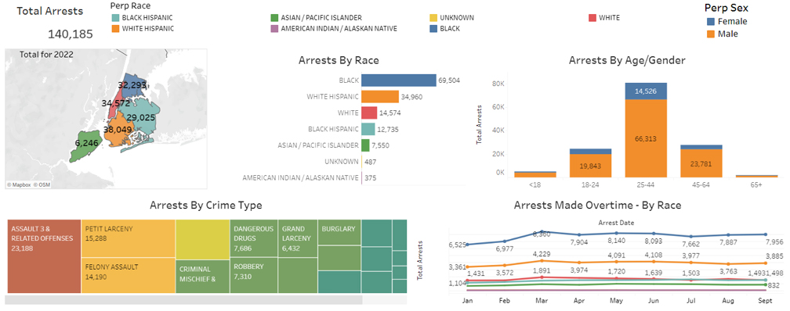
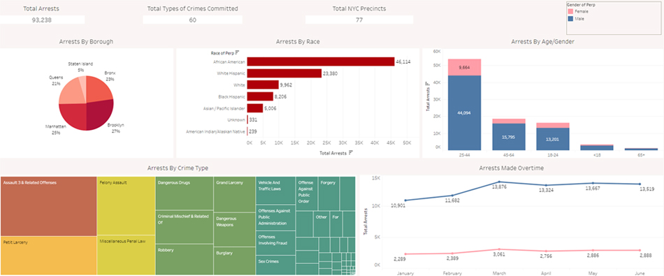
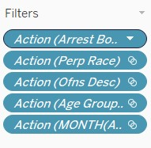

Arrests in NYC
as a Dashboard
This dashboard is designed to be easily updated when new data becomes available.

What:
A Tableau Dashboard to visualise the arrests made in New York city this year.Why:
I saw another persons version of this – with no interactivity, and a pie chart showing the % of the crimes in each borough – and just thought to myself “This can be so much better”.How:
First I got the ‘Incident Level Arrest Data - current year through most recent full quarter’ dataset from the NYC Data website - https://www.nyc.gov/site/nypd/stats/crime-statistics/citywide-crime-stats.pageNext I looked into the csv file using Excel – only 140k entries – and spotted two minor issues.
- There were entries with (null) in both the PD_DESC and OFNS_DESC columns.
- The ARREST_BORO had the boroughs as letters – B, K, S, Q & M.
Nulls:
After turning on the Filter function in Excel, I then organised the PD_DESC column by A-Z. This made all the (null)’s be at the top of the sheet. I noticed that any entry that had (null) in the PD_DESC column, also had (null) in the OFNS_DESC.I pondered if the codes in the LAW_CODE might give me an idea what the nulls were supposed to be, but all the codes in the null entries were unique to nulls.
In the end, I ended up deleting 379 entries that had (null).
Boroughs:
I knew what the 5 letters - B, K, S, Q & M - stood for (K being BrooKlyn).However, with my initial plan being – make it as easy for anybody to use newer data to update the report – I decided that changing the Aliases in Tableau would be better than changing in the Excel file.
Deciding on the charts/info needed:
The original Tableau Dashboard had:
- Total Arrests (single number)
- Total Types of Crimes Committed (single number)
- Total NYC Precincts (single number)
- Arrests by Borough (Pie Chart)
- Arrests by Race (Bar Chart – single colour)
- Arrests by Sex (Stacked Bar Chart)
- Arrests by Crime Type (Tree Chart)
- Arrests Made Over Time (Line Chart – based on sex)
My thoughts:
‘Total Arrests’ was going to be a primary need, as it is the basis for all the other charts.While ‘Total Types of Crimes Committed’ might be mildly interesting, ‘Total NYC Precincts’ really means nothing for this Dashboard – I have decided not to use either.
‘Arrests by Borough’ as a Pie Chart! This is what got me going. I did not know what the 5 boroughs of NYC look like, in relation to size or population. But with Staten Island having only 5% of the crimes, compared to Brooklyn having 27%, I immediately asked “How big is Staten Island, compared to Brooklyn? Maybe that is why there is such a difference.”. As a visualiser I went straight for, “show me the size difference visually”, but I also thought about the population difference. (500k in Staten Island, 2.5 million in Brooklyn)
Making the Boroughs show up as a map, gives an instant visual aid to the number of arrests. But this would require a GeoJSON file to show the outlines of the boroughs.
‘Arrests by Race as a Bar Chart – single colour’. First I thought about the ‘Arrests Made Over Time as a Line Chart – based on sex’, and I did not see the power in it. I thought by Race would have been needed more.
But this meant a ‘single colour chart’ would not work, so I changed it using Tableaus ‘Automatic’.
‘Arrests by Sex as a Stacked Bar Chart’ – by Sex is always a good breakdown. In crime it does seem to be more males getting caught, but in other situations it might surprise the viewer by not being the sex they think it would be.
‘Arrests by Crime Type as a Tree Chart’. I can’t say I am a massive fan of Tree Charts (and I am even less of a fan of Bubble Charts), but with so many crime types (60) this is perfect. However, the original dashboard was not showing the number of crimes – unless you scrolled over. As a user, having to scroll over each one that grabs your attention is an annoying delay.
‘Arrests Made Over Time as a Line Chart – based on sex’. As mentioned above, by Race would have more use.
Creating the Dashboard:
These were the most basic versions of charts - Bar, Stacked Bar, Tree, Line Chart - with a slight change of the colour scheme for the 'by Race' charts.Connecting the dataset to the GeoJSON file - to show the boroughs - was a bit more difficult.
The GeoJSON file had "boro_name":"Staten Island"
The NYPD file had Arrest_boro as 'S'
Leaving the GeoJSON file as 'Staten Island' and changing the alias of the Arrest_boro in Tableau to 'Staten Island' didn't work.
I ended up modifying the GeoJSON files boro_name's (there were only 5 anyway) to the initial that was in the NYPD file.
Again, this was to make importing new data as easy as possible - all the changes were on the GeoJSON file, and the aliases already set up in Tableau.
When I placed all the charts in the relevant locations of the dashboard, I started turning on 'Use as Filter'.The NYPD file had Arrest_boro as 'S'
Leaving the GeoJSON file as 'Staten Island' and changing the alias of the Arrest_boro in Tableau to 'Staten Island' didn't work.
I ended up modifying the GeoJSON files boro_name's (there were only 5 anyway) to the initial that was in the NYPD file.
Again, this was to make importing new data as easy as possible - all the changes were on the GeoJSON file, and the aliases already set up in Tableau.
This is what allows the inter-activity between all the charts.
If you are downloading the dashboard, you will see
these filters show up in the individual chart screens.
These are added when you choose 'Use as Filter'.
These are added when you choose 'Use as Filter'.

To this:
*I could not get the numbers on the map to change when I click on any of the other charts (yet),
but if you click on a borough, the other charts change.